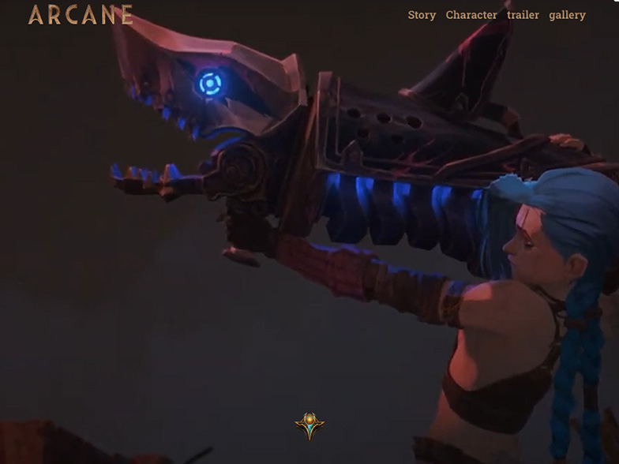

hello! stranger
안녕하세요!
프론트엔드를 꿈꾸는
신입 웹 퍼블리셔 양진성입니다.
저는 더 나은 코드를 만들기 위해 열심히 공부중인 신입 웹 퍼블리셔 입니다. 제가 상상한 디자인을 그대로 웹 페이지에 구현했을때 짜릿함을 느낍니다.
사용자가 웹 페이지를 보고 흥미를 느끼고 UI/UX 디자인을 통해 방문한 사용자들이 편안함을 느꼈으면 합니다. 웹 표준, 웹 접근성을 고려해 마크업을 하고 웹 페이지 사용에 어려움을 느끼는 분들도 편리하게끔 만드는 것이 제 목표입니다.
최근에는 animation 과 javascript 를 활용한 동적 이벤트를 알고리즘 공부를 통해 깔끔하게 구현해내면 너무 뿌듯합니다.
공부를 통해 새로운 걸 알게 되고
그것을 활용해서 페이지를 만들면 느껴지는 성취감이
제가 이 길을 선택한 이유입니다.

제가 잘하고
중요하게 생각하는 것들입니다!
-
기본을 지키는 코딩
웹 표준을 지켜 어떤 브라우저에서나 동일한 화면이 나올 수 있도록 하고, 웹 접근성을 지켜서 인터넷 사용이 어려우신 분들도 쉽게 사용할 수 있도록 만듭니다.
-
기본적인 스킬
Html 과 Css를 활용해 반응형 웹을 만들 수 있고 스타일을 파악해 유지보수가 가능합니다. Javascript jQuery를 활용한 동적인 웹 페이지를 만들수 있습니다.
-
끊임없이 공부하기
어엿한 퍼블리셔가 되고 나아가 프론트엔드 까지 가기 위해서 개인적인 공부를 게을리 하지 않도록 깃허브와 블로그에 기록하고 있습니다.
-
소통과 협력
기본적인 퍼블리싱 뿐 아니라, 사람과 사람과의 관계에도 긍적적인 모습으로 소통하고 협력적인 자세를 아끼지 않습니다.
-
사용자는 내 가족이다.
나의 어머니, 아버지가 웹 사이트를 사용한다고 생각하고 어떻게 해야 편하게 사용하실 수 있을지 늘 고민합니다.
PROJECT
-
홈페이지
삼천리 PC/mobile
기여도 100% , 기간 2022.06 ~ 2022.07
-
홈페이지
아케인 반응형 웹
기여도 100% , 기간 2022.08 ~ 2022.09
-
홈페이지
네일샵 반응형 웹
기여도 100% , 기간 2022.10 ~ 2022.10
-
홈페이지
뉴진스 팬 페이지 반응형
기여도 100% , 기간 2022.11 ~ 2022.11
-
홈페이지
vue SPA 웹
기여도 100% , 기간 2022.12 ~ 2022.12
삼천리 기업 홈페이지
xhtml 방식으로 구성된 삼천리 기업형 홈페이지를 웹 표준, 접근성에 맞게 리뉴얼한 페이지 입니다. 신뢰감 있는 푸른색상을 메인으로 다시 디자인하고 javaScript를 활용한 이벤트와, php를 활용한 로그인,회원가입 페이지 구현을 공부했습니다.
-
- 제작 스킬
- - html5, css3, javascript, jQuery, Ajax, php, MySQL
- - Adobe Photoshop
- - W3C 웹표준 마크업 검사, 웹 접근성 검사(K-WAH), 크로스브라우징 완료
-
- 참여도
- - 100%